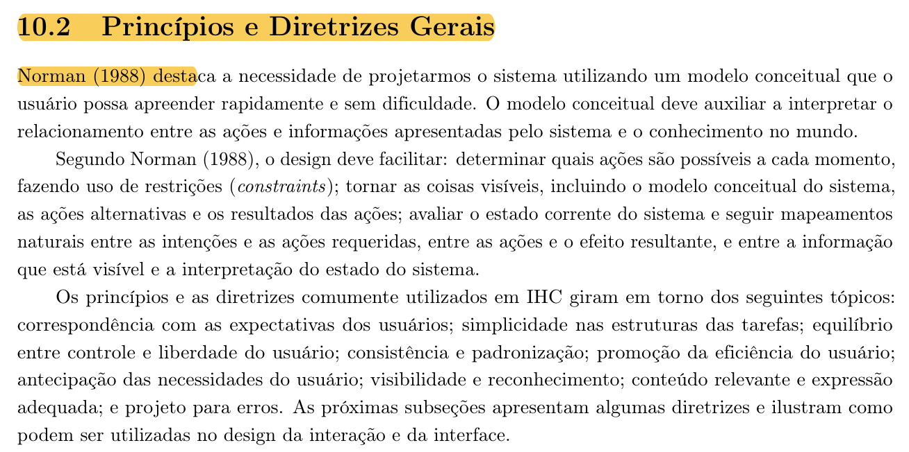
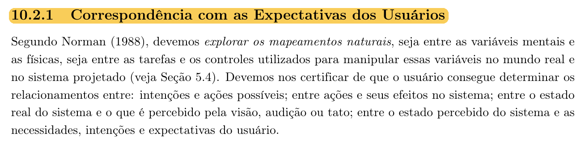
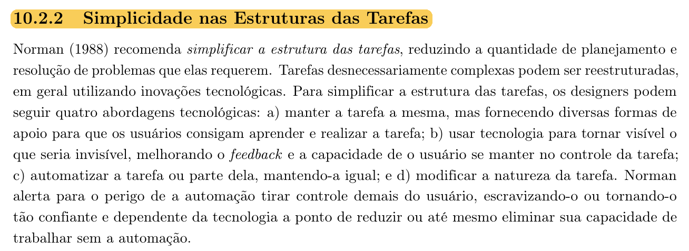
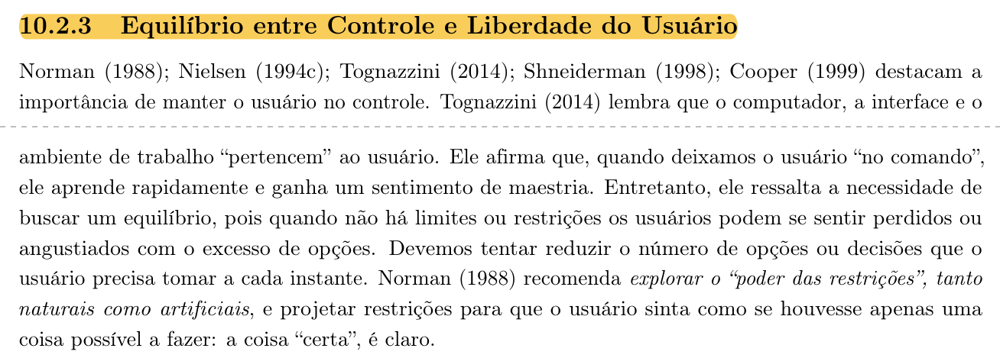
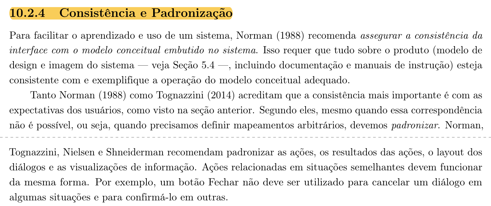
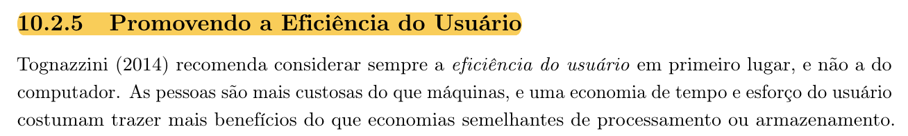
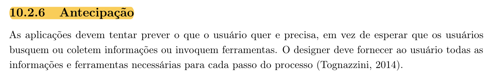
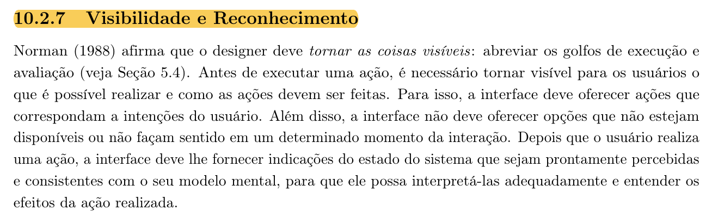
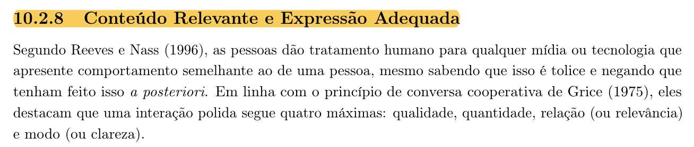

Tabela de Contribuição
| Membro | Contribuição |
|---|---|
| Daniel da Silva Batista | Elaboração integral do documento de Princípios Gerais de Projeto, fundamentação teórica segundo Norman (1988) e Barbosa e Silva (2010), inserção das evidências bibliográficas fotográficas, análise heurística dos 8 tópicos no portal PCI Concursos e proposição das diretrizes de reprojeto (Itens 11 e 12). |
| Pedro Rocha Ferreira Lima | Revisão técnica de conformidade com os modelos de tarefas e inspeção ergonômica. |
| Arthur Sismene Carvalho | Validação das violações no contexto de simulados e acesso móvel. |
| Leonardo da Silva Lopes Júnior | Revisão de consistência com os hábitos dos concurseiros maduros e ativos. |
| Gemini | Auxílio na estruturação textual e formatação do artefato em Markdown (conforme Política de Uso de IA). |
Fonte: Daniel da Silva Batista (2026).
Princípios Gerais de Projeto
1. Introdução
No design de interação e na engenharia de usabilidade em Interação Humano-Computador (IHC), os Princípios Gerais de Projeto atuam como metas de alto nível e diretrizes fundamentais que orientam os projetistas na tomada de decisões arquiteturais e de interface. Diferentemente de regras rígidas ou convenções estéticas puras, os princípios sintetizam décadas de conhecimento empírico e psicológico acumulado sobre como os seres humanos percebem, processam informações e operam sistemas computacionais (Barbosa e Silva, 2010; Norman, 1988).
Conforme preconizam Simone Barbosa e Bruno Silva (2010, p. 264–265), a aplicação criteriosa de princípios e diretrizes permite construir um modelo conceitual claro e intuitivo, facilitando o aprendizado natural do usuário e mitigando atritos operacionais.
A Figura 1 comprova a fundamentação teórica adotada a partir da obra de referência da disciplina:
Figura 1: Referência Bibliográfica — Princípios e Diretrizes Gerais de Projeto

Fonte: BARBOSA e SILVA (2010, p. 265).
2. Metodologia de Avaliação
Para avaliar a aderência do portal PCI Concursos aos princípios de design de IHC, a equipe adotou como base teórica os 8 tópicos essenciais sistematizados por Barbosa e Silva (2010, Cap. 9), consolidados a partir das obras seminais de Donald Norman (1988) e Bruce Tognazzini (2003):
- Correspondência com as expectativas dos usuários;
- Simplicidade nas estruturas das tarefas;
- Equilíbrio entre controle e liberdade do usuário;
- Consistência e padronização (promoção da eficiência do usuário);
- Antecipação das necessidades do usuário;
- Visibilidade e reconhecimento;
- Conteúdo relevante e expressão adequada;
- Projeto para erros.
Para cada um dos oito princípios, este documento apresenta: * A definição conceitual da literatura acadêmica; * O registro fotográfico da página da obra de referência (comprovando a fundamentação teórica exigida na disciplina); * A análise diagnóstica do comportamento da interface atual do PCI Concursos; * A identificação da violação ergonômica observada; * A sugestão técnica de reprojeto a ser incorporada nas etapas subsequentes; * O autor responsável pelo exame.
3. Análise dos 8 Princípios Gerais no PCI Concursos
3.1 Correspondência com as Expectativas dos Usuários
3.1.1 Definição Teórica
A correspondência com as expectativas dos usuários (mapeamento natural) estabelece que o sistema deve refletir fielmente o modelo mental que o usuário traz do mundo real e de suas experiências cotidianas. O design deve explorar conexões intuitivas entre as intenções do usuário, as ações físicas exigidas na tela e as transformações resultantes no estado do sistema (Barbosa e Silva, 2010, p. 265; Norman, 1988).
A Figura 2 apresenta o registro do texto de referência para este princípio:
Figura 2: Referência Bibliográfica — Correspondência com Expectativas dos Usuários

Fonte: BARBOSA e SILVA (2010, p. 265).
3.1.2 Análise no PCI Concursos
No domínio de concursos públicos, o modelo mental típico do concurseiro organiza sua busca prioritariamente em torno de três variáveis imediatas: Localização/Região de interesse, Nível de escolaridade e Status do certame (Inscrições Abertas ou Previstos). O usuário espera acessar o portal e filtrar instantaneamente os certames da sua Unidade Federativa.
3.1.3 Violação Identificada
No PCI Concursos, o agrupamento regional aglutina estados inteiros de forma estática e fragmentada. Ao acessar a seção "Centro-Oeste", o portal exibe uma página corrida onde editais de pequenas prefeituras do interior de Goiás e Mato Grosso aparecem intercalados com concursos de grande porte do Distrito Federal. Não existe correspondência natural com a intenção do candidato que busca vagas estritamente em sua cidade/estado, obrigando-o a realizar varredura visual linha por linha.
3.1.4 Sugestão de Reprojeto
Implementar mecanismo de filtragem facetada em tempo real com seleção explícita por UF (ex.: checkbox dedicado para DF, GO, MT, MS), reordenando automaticamente a listagem de acordo com a proximidade geográfica e relevância do candidato.
3.2 Simplicidade nas Estruturas das Tarefas
3.2.1 Definição Teórica
A simplicidade nas estruturas das tarefas preconiza que o sistema deve reduzir a sobrecarga cognitiva e a complexidade desnecessária durante a execução de uma atividade. Tarefas longas ou intrincadas devem ser decompostas em passos lógicos, mantendo a essência da tarefa e explicitando visualmente o caminho a ser percorrido (Barbosa e Silva, 2010, p. 266–267; Norman, 1988).
A Figura 3 apresenta a fundamentação teórica extraída do livro-texto:
Figura 3: Referência Bibliográfica — Simplicidade nas Estruturas das Tarefas

Fonte: BARBOSA e SILVA (2010, p. 266).
3.2.2 Análise no PCI Concursos
Uma das tarefas mais frequentes no portal é o download de cadernos de provas anteriores e gabaritos oficiais para estudo e resolução manual (conforme mapeado na Persona Maria Helena e na Tarefa 02).
3.2.3 Violação Identificada
Para baixar uma prova anterior, a estrutura da tarefa impõe fricção excessiva: o usuário clica na aba "Provas", precisa pesquisar o cargo em um campo desprovido de autocompletar, abre uma tela intermediária com anúncios concorrentes e precisa clicar em dois links separados e visualmente discretos para obter o caderno de questões e o gabarito. Se desejar as provas de três anos seguidos, precisa repetir todo o fluxo do zero.
3.2.4 Sugestão de Reprojeto
Simplificar a tarefa disponibilizando na tela de detalhes da prova um botão unificado de ação direta: "Baixar Caderno + Gabarito (Pacote ZIP ou PDF consolidado)", além de filtros rápidos por ano de aplicação e banca examinadora.
3.3 Equilíbrio entre Controle e Liberdade do Usuário
3.3.1 Definição Teórica
O equilíbrio entre controle e liberdade assegura que o usuário sinta que está no comando da interação, permitindo-lhe explorar caminhos alternativos, desfazer ações indesejadas e navegar de forma não linear, sem que o sistema imponha barreiras rígidas ou o aprisione em fluxos engessados (Barbosa e Silva, 2010, p. 267; Tognazzini, 2003).
A Figura 4 documenta a referência bibliográfica deste princípio:
Figura 4: Referência Bibliográfica — Equilíbrio entre Controle e Liberdade

Fonte: BARBOSA e SILVA (2010, p. 267).
3.3.2 Análise no PCI Concursos
Ao realizar buscas por palavra-chave ou tentar navegar na seção de simulados, o usuário frequentemente necessita ajustar termos de busca, limpar critérios aplicados ou retornar a listagens anteriores sem perder o contexto navegacional.
3.3.3 Violação Identificada
No portal atual, ao aplicar um filtro textual ou navegar por uma categoria profunda, não existe um botão explícito de "Limpar Filtros" ou trilha de navegação (breadcrumbs). Caso o usuário cometa um equívoco de digitação na busca, ele é obrigado a selecionar o texto no campo manualmente, apagar e reexecutar a consulta. Além disso, na seção de simulados, não há opção de pausar o progresso ou sair da sessão sem perder as respostas já marcadas.
3.3.4 Sugestão de Reprojeto
Incorporar botões visíveis para cancelamento rápido de filtros aplicados (tags com botão 'X'), trilha de navegação contextual (Home > Concursos > Centro-Oeste > DF) e suporte a saída e retomada com salvamento automático de rascunhos em simulados e formulários.
3.4 Consistência e Padronização (Promoção da Eficiência do Usuário)
3.4.1 Definição Teórica
A consistência interna e externa assegura que elementos com as mesmas funções possuam rótulos, cores, ícones e comportamentos visuais padronizados em todas as telas da aplicação. Essa padronização reduz a carga de trabalho cognitivo e promove a eficiência de uso, permitindo que o usuário transfira o aprendizado de uma seção para outra sem hesitação (Barbosa e Silva, 2010, p. 268–269; Norman, 1988).
As Figuras 5 e 6 trazem o registro do livro-texto correspondente a este princípio:
Figura 5: Referência Bibliográfica — Consistência e Padronização

Fonte: BARBOSA e SILVA (2010, p. 268).
Figura 6: Referência Bibliográfica — Promoção da Eficiência do Usuário

Fonte: BARBOSA e SILVA (2010, p. 269).
3.4.2 Análise no PCI Concursos
O portal exibe milhares de notícias e links de downloads diariamente. Para que o uso seja eficiente, elementos clicáveis (links e botões legítimos de editais) devem ser inconfundíveis frente ao conteúdo informativo e aos blocos comerciais.
3.4.3 Violação Identificada
Existe grave inconsistência e quebra de padronização visual no portal: links reais para abertura de editais aparecem como textos sublinhados azuis simples em fontes de tamanho reduzido, enquanto anúncios publicitários incorporados exibem grandes botões gráficos retangulares em tons verdes chamativos com a inscrição "DOWNLOAD" ou "CLIQUE AQUI". Essa disparidade quebra o padrão de affordance e penaliza severamente usuários maduros ou cautelosos (como evidenciado na entrevista da Persona Maria Helena).
3.4.4 Sugestão de Reprojeto
Padronizar todos os botões de ação do portal sob um design system consistente (com cor primária azul institucional, ícone de anexo e tipografia padronizada), delimitando claramente a área editorial e isolando contêineres de anúncios em áreas periféricas com rotulagem inequívoca de "Publicidade".
3.5 Antecipação das Necessidades do Usuário
3.5.1 Definição Teórica
O princípio da antecipação preconiza que a aplicação deve colocar à disposição do usuário as informações e ferramentas que ele provavelmente necessitará no passo seguinte de sua atividade, sem exigir que ele precise solicitar ou procurar ativamente por dados elementares (Barbosa e Silva, 2010, p. 269–270; Tognazzini, 2003).
A Figura 7 comprova a referência teórica deste princípio:
Figura 7: Referência Bibliográfica — Antecipação das Necessidades do Usuário

Fonte: BARBOSA e SILVA (2010, p. 270).
3.5.2 Análise no PCI Concursos
O concurseiro que consulta um edital aberto busca responder imediatamente a três perguntas capitais: Qual o prazo final de inscrição?, Qual a data prevista para a aplicação das provas? e Qual o valor da taxa de inscrição?.
3.5.3 Violação Identificada
O portal PCI Concursos falha em antecipar essas informações na página inicial e nas listagens regionais. Os cards de notícias exibem apenas o título resumido da seleção e o número genérico de vagas. Para saber se a inscrição encerra no dia seguinte ou daqui a um mês, o usuário é obrigado a abrir a notícia detalhada ou vasculhar o edital em PDF dezenas de páginas adiante.
3.5.4 Sugestão de Reprojeto
Incorporar diretamente nos cards de resumo dos concursos tags informativas antecipadas: "Inscrições até DD/MM (Restam X dias)", "Prova em DD/MM", "Taxa: R$ XX,00" e indicação explícita do nível de escolaridade.
3.6 Visibilidade e Reconhecimento
3.6.1 Definição Teórica
O princípio da visibilidade e reconhecimento sustenta que o usuário não deve ser obrigado a sobrecarregar sua memória de curto prazo lembrando-se de informações de telas anteriores. O sistema deve manter objetos, ações e opções essenciais visíveis ou prontamente recuperáveis, tornando o estado corrente do sistema explícito a todo instante (Barbosa e Silva, 2010, p. 270–271; Norman, 1988).
A Figura 8 apresenta o texto teórico da referência bibliográfica:
Figura 8: Referência Bibliográfica — Visibilidade e Reconhecimento

Fonte: BARBOSA e SILVA (2010, p. 271).
3.6.2 Análise no PCI Concursos
Conforme demonstrado nos dados da Análise Documental DOC-02 (Pedro Rocha), cerca de 80% dos editais sofrem retificações e erratas nas primeiras semanas de publicação, alterando cronogramas, requisitos ou conteúdos programáticos.
3.6.3 Violação Identificada
No PCI Concursos, quando uma banca organizadora publica uma retificação de cronograma (conforme narrado no Cenário CEN-04 de Lucas Ferreira), a notícia original permanece com seu título idêntico e o aviso da retificação é simplesmente inserido como uma pequena linha de texto no rodapé da página. Não há selo cromático ou badge no topo sinalizando "EDITAL RETIFICADO", fazendo com que o candidato desavisado confie em prazos desatualizados.
3.6.4 Sugestão de Reprojeto
Implementar badges visuais de alto contraste ("RETIFICADO", "PRORROGADO", "NOVO GABARITO") exibidos no topo dos cards e no cabeçalho das notícias, com destaque temporal da última alteração efetuada.
3.7 Conteúdo Relevante e Expressão Adequada
3.7.1 Definição Teórica
Este princípio determina que a interface deve conter apenas as informações essenciais para a realização das atividades em curso, eliminando diálogos prolixos, ruídos estéticos e dados obsoletos que concorrem pela atenção do usuário. A linguagem empregada deve ser precisa, concisa e aderente ao vocabulário do domínio (Barbosa e Silva, 2010, p. 271–272).
A Figura 9 apresenta o embasamento teórico correspondente a este princípio:
Figura 9: Referência Bibliográfica — Conteúdo Relevante e Expressão Adequada

Fonte: BARBOSA e SILVA (2010, p. 272).
3.7.2 Análise no PCI Concursos
O portal tem como objetivo prioritário a divulgação de oportunidades vigentes para concurseiros. As páginas devem apresentar clareza textual e hierarquia visual bem demarcada.
3.7.3 Violação Identificada
O portal sofre de severa sobrecarga informativa e falta de poda de conteúdo: páginas de listagem mantêm notícias de concursos encerrados há meses misturadas a seleções recém-publicadas. Ademais, o volume desproporcional de blocos promocionais em banners piscantes desvia a atenção da leitura e cria ruído cognitivo exaustivo, especialmente para candidatos que estudam à noite ou que possuem cansaço visual.
3.7.4 Sugestão de Reprojeto
Segregar rigorosamente os certames por status funcional através de abas explícitas ("Inscrições Abertas", "Inscrições em Breve" e "Histórico/Encerrados"), arquivando automaticamente certames cujos prazos já expiraram e aplicando tipografia limpa com espaçamento hierárquico equilibrado.
3.8 Projeto para Erros
3.8.1 Definição Teórica
O princípio de projeto para erros preconiza que a interface deve ser projetada para antecipar e prevenir a ocorrência de erros pelo usuário (design defensivo). Quando os erros ocorrerem inevitavelmente, o sistema deve fornecer mensagens de diagnóstico claras, educadas e orientadas à recuperação imediata, sem culpar o usuário nem apagar dados já digitados (Barbosa e Silva, 2010, p. 273–275; Norman, 1988).
A Figura 10 documenta o embasamento bibliográfico correspondente a este princípio:
Figura 10: Referência Bibliográfica — Projeto para Erros

Fonte: BARBOSA e SILVA (2010, p. 273).
3.8.2 Análise no PCI Concursos
Formulários de captura de dados, tais como a assinatura de boletins de vagas por e-mail e as caixas de pesquisa de editais, devem prezar pela blindagem contra erros acidentais de digitação.
3.8.3 Violação Identificada
Conforme identificado na Análise Documental DOC-04 e no Cenário CEN-08 (Persona Renata Freitas), o formulário de cadastro de e-mail do PCI Concursos é composto por um campo único de texto simples sem validação sintática em tempo real e sem campo de confirmação de e-mail. Se o usuário digitar acidentalmente seu endereço com erro tipográfico (ex.: .con em vez de .com), o sistema aceita a submissão, exibe aviso genérico de sucesso e o usuário nunca recebe as notificações, sem qualquer mecanismo de recuperação ou diagnóstico preventivo.
3.8.4 Sugestão de Reprojeto
Implementar validação sintática em tempo real no campo de e-mail, inclusão de confirmação de e-mail e fluxo de confirmação dupla (double opt-in) com envio de mensagem de ativação na caixa postal, além de sugestão inteligente de correção de digitação para buscas textuais sem resultados ("Você quis dizer: Correios?").
4. Síntese dos Princípios Gerais e Diretrizes para o PCI Concursos
A Tabela 1 consolida a matriz diagnóstica dos 8 princípios gerais analisados, mapeando as violações prioritárias e as ações de reprojeto correspondentes:
Tabela 1: Matriz de Síntese dos Princípios Gerais de Projeto no PCI Concursos
| # | Princípio de Projeto | Violação Diagnosticada no PCI Concursos | Diretriz e Solução de IHC Proposta | Autor Responsável |
|---|---|---|---|---|
| 1 | Correspondência com Expectativas | Concursos de pequenos municípios misturados ao DF sem filtro por estado. | Implementar filtro reativo facetado por Unidade Federativa (UF). | Daniel da Silva Batista |
| 2 | Simplicidade nas Tarefas | Múltiplas etapas e cliques dispersos para baixar caderno de prova e gabarito. | Botão unificado de download com pacote consolidado de provas e gabaritos. | Daniel da Silva Batista |
| 3 | Controle e Liberdade | Ausência de botão para limpar filtros e de trilhas de navegação (breadcrumbs). | Inclusão de breadcrumbs e tags removíveis de filtros com cancelamento em 1 clique. | Daniel da Silva Batista |
| 4 | Consistência e Eficiência | Anúncios comerciais com botões falsos de "Download" maiores que os links legítimos. | Padronização de botões de ação e isolamento estrito de blocos publicitários. | Daniel da Silva Batista |
| 5 | Antecipação das Necessidades | Ausência de prazos e datas de prova visíveis nos cards de resumo da listagem. | Exibição de datas críticas e contagem regressiva nos cards de editais. | Daniel da Silva Batista |
| 6 | Visibilidade e Reconhecimento | Notícias de editais retificados sem destaque cromático ou alerta no topo. | Criação de badges visuais de alto contraste ("RETIFICADO", "PRORROGADO"). | Daniel da Silva Batista |
| 7 | Conteúdo Relevante | Concursos encerrados misturados a seleções ativas e poluição publicitária. | Segregação estrita por status em abas e arquivamento automático de certames passados. | Daniel da Silva Batista |
| 8 | Projeto para Erros | Formulário de alertas de e-mail sem confirmação dupla e sem validação sintática. | Validação sintática em tempo real, campo de confirmação e double opt-in. | Daniel da Silva Batista |
Fonte: Daniel da Silva Batista (2026).
5. Bibliografia
BARBOSA, S. D. J.; SILVA, B. S. Interação Humano-Computador. Rio de Janeiro: Elsevier, 2010.
NORMAN, Donald A. The Design of Everyday Things. New York: Basic Books, 1988.
TOGNAZZINI, Bruce. First Principles of Interaction Design. AskTog, 2003. Disponível em: https://asktog.com/atc/principles-of-interaction-design/.
6. Histórico de Versões
| Versão | Data | Descrição | Autor(es) | Revisor(es) |
|---|---|---|---|---|
1.0 |
06/10/2026 | Elaboração integral do documento de Princípios Gerais de Projeto, com fundamentação teórica de Norman (1988) e Barbosa & Silva (2010), inserção das fotos das referências bibliográficas dos 8 tópicos e diagnóstico das violações no PCI Concursos (Itens 11 e 12). | Daniel da Silva Batista | Pedro Rocha Ferreira Lima |
Fonte: Daniel da Silva Batista (2026).